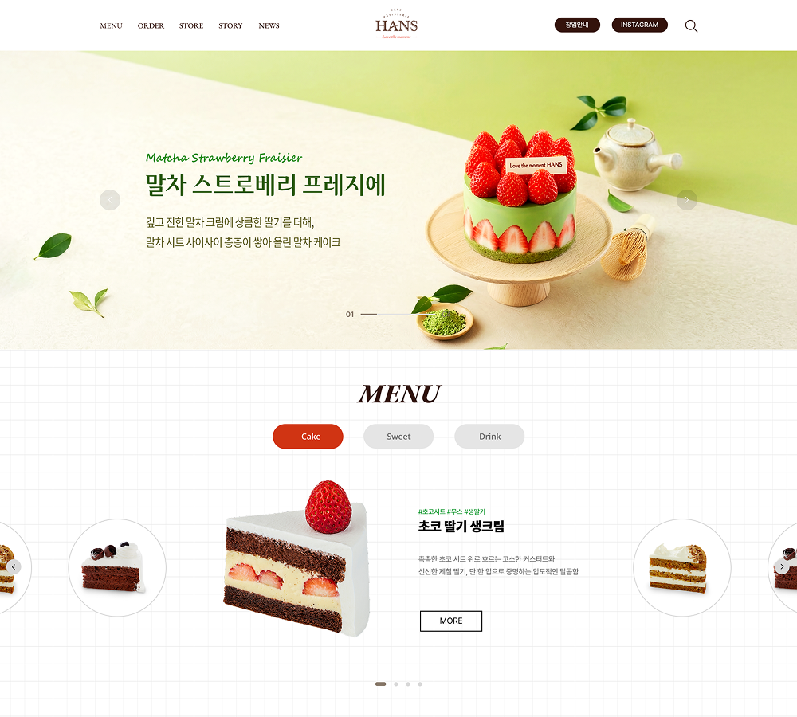
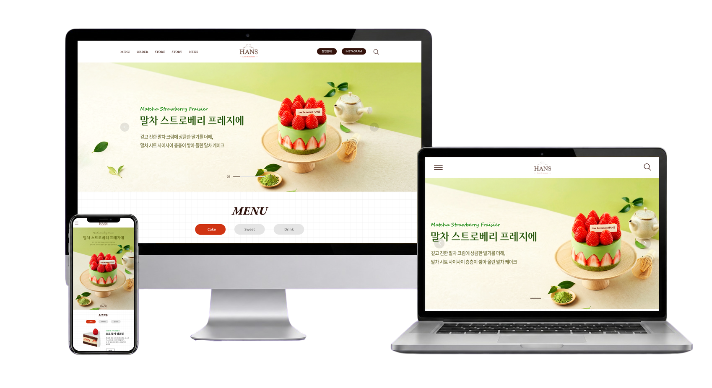
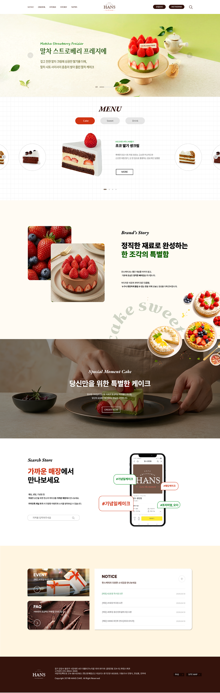

PRODUCT
VISUAL
큰 제품 이미지와 여유 있는 레이아웃으로 한스케익의 산뜻하고 달콤한 브랜드 감성을 표현했습니다.
PREMIUM DESSERT BRAND REDESIGN
한스케익의 브랜드 감성과 제품 탐색 흐름을 동시에 정돈한 반응형 웹사이트 UX/UI 리디자인 프로젝트입니다.
EXPLORE CASE↘
한스케익의 따뜻한 감성과 제품의 매력을 한눈에 느낄 수 있도록 웹사이트를 새롭게 구성했습니다.
기존 사이트의 메뉴 구성과 브랜드 정보를 분석하고, 케이크와 디저트 제품을 더욱 쉽고 매력적으로 탐색할 수 있도록 콘텐츠 흐름을 정리했습니다. 큰 제품 비주얼과 여유 있는 레이아웃을 활용해 한스케익의 밝고 산뜻한 이미지를 강조했습니다.
메인 비주얼부터 제품 소개, 주문, 매장 찾기, 브랜드 소식으로 자연스럽게 이어지도록 사용자 동선을 설계했습니다. 데스크톱과 모바일 환경에 맞춘 반응형 레이아웃과 슬라이드 인터랙션을 적용해 일관된 사용 경험을 구현했습니다.
큰 제품 이미지와 여유 있는 레이아웃으로 한스케익의 산뜻하고 달콤한 브랜드 감성을 표현했습니다.
케이크, 스위트, 음료를 직관적으로 구분해 원하는 제품을 쉽고 빠르게 탐색할 수 있도록 구성했습니다.
제품 소개에서 주문과 매장 찾기까지 자연스럽게 이어지는 사용자 흐름을 설계했습니다.
한스케익과 유사한 케이크·디저트 브랜드의 웹사이트를 비교해 제품 탐색 방식과 주문 흐름, 브랜드 표현 방식을 분석했습니다. 각 사이트의 장점과 개선점을 바탕으로 한스케익에 적합한 리뉴얼 방향을 도출했습니다.
인기 제품과 가격이 메인에서 바로 노출됨
온라인 주문과 구매 흐름이 명확함
제품별 특징과 구매 정보 확인이 쉬움
메뉴와 매장 정보를 체계적으로 제공함
케이크 예약과 주문 기능이 잘 연결됨
브랜드와 서비스 정보가 다양하게 구성됨
쇼핑몰 중심 구성으로 브랜드 감성이 약함
상품과 텍스트가 많아 화면이 다소 복잡함
제품 탐색 과정에서 시각적 여유가 부족함
제공하는 정보가 많아 메뉴 구조가 복잡함
웹과 모바일 서비스가 분리되어 이동이 많음
케이크 제품에 집중하기 어려운 구간이 있음
큰 제품 이미지를 중심으로 한스케익의 매력을 먼저 전달
메뉴와 정보를 간결하게 정리해 원하는 제품을 쉽게 탐색
제품 탐색부터 주문과 매장 찾기까지 자연스럽게 이어지는 사용자 동선
제품 종류와 정보가 한눈에 구분되지 않아 원하는 메뉴를 탐색하기 어려움
케이크·스위트·음료를 명확하게 구분해 원하는 제품을 쉽고 빠르게 탐색
제품의 매력과 한스케익만의 따뜻한 브랜드 감성이 충분히 드러나지 않음
큰 제품 비주얼과 부드러운 컬러를 활용해 산뜻하고 따뜻한 브랜드 이미지 강화
제품 확인 이후 주문과 매장 정보로 이어지는 흐름이 분리되어 있음
제품 탐색부터 주문·매장 찾기까지 자연스럽게 연결되는 사용자 동선 설계
부드러운 크림과 화이트 컬러를 기반으로 라임과 레드 포인트를 더해 한스케익의 따뜻하고 산뜻한 이미지를 표현했습니다. 여유 있는 레이아웃과 큰 제품 비주얼을 활용하고, 제품 탐색부터 주문까지 자연스럽게 이어지는 사용자 경험을 구성했습니다.
크림톤과 여백으로 따뜻한 무드 표현
라임과 레드로 산뜻한 포인트 강조
큰 제품 이미지로 디저트의 매력 전달
탐색부터 주문까지 직관적인 흐름
공통 무채색 토큰은 그대로 두고 프로젝트별로--accent,--accent-soft,--accent-dark만 교체합니다.
ABCDEFGHIJKLMNOPQRSTUVWXYZ
0123456789
가나다라마바사아자차카타파하
데스크톱의 비대칭 레이아웃은 태블릿과 모바일에서 콘텐츠 우선순위에 맞춰 단순한 세로 구조로 변환됩니다.

